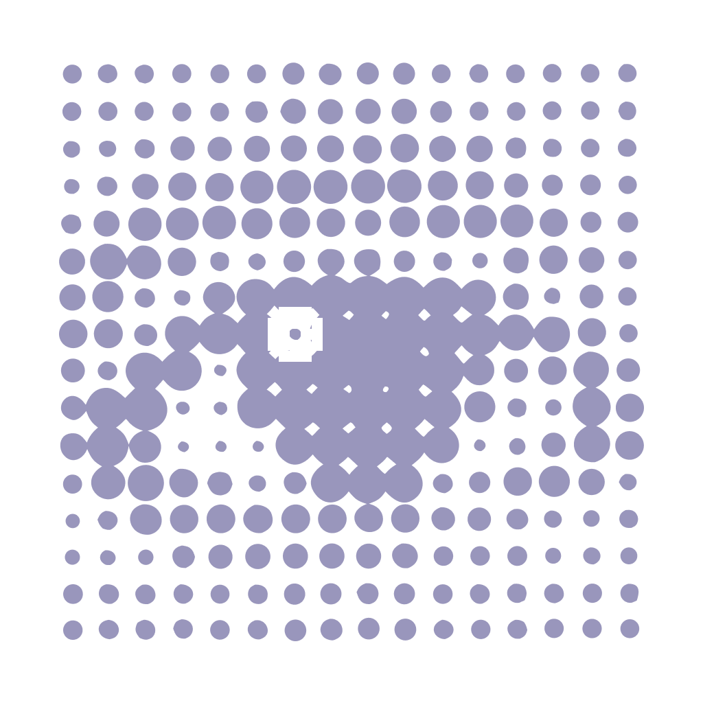

IRIS // 50-10-20
⚙
–
×
MOD // FOCO
50:00
Descanso visual em: 20:00

SYS.POSTURE // PROTOCOLO ATIVO
CYCLES //
0/4
Iniciar
Resetar
SYS.CONFIG // INTERVALOS
Tempo de Foco (minutos):
Tempo de Descanso (minutos):
Alertas Sonoros (bowl / windchime)
Salvar
Cancelar